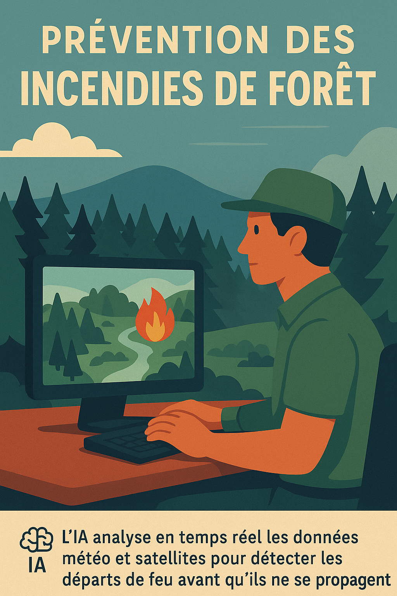

Les bienfaits de l’IA
L’intelligence artificielle n’est pas qu’un défi écologique : bien utilisée, elle peut être une alliée de la planète. Voici quelques exemples d’usages positifs et concrets.

Prévention des incendies
Analyse en temps réel des données pour détecter les départs de feu avant qu’ils ne deviennent incontrôlables.
Réduction du gaspillage alimentaire
Anticipation de la demande pour éviter les surplus et pertes alimentaires dans les supermarchés.

Protection de la biodiversité
Suivi intelligent des espèces menacées grâce à l’analyse automatique des données de terrain et caméras.
Optimisation agricole
Amélioration des pratiques agricoles : irrigation ciblée, détection précoce des maladies, rendement accru.